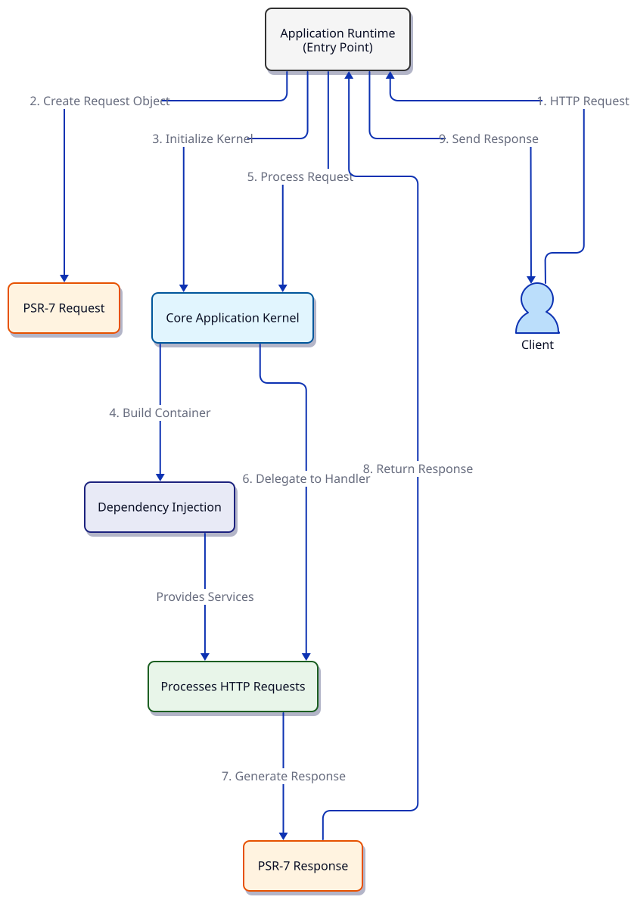

Derafu HTTP: Flow - Detailed Explanation
The Derafu HTTP component implements a clean, modular approach to handling HTTP requests in PHP applications. The flow diagram illustrates how an HTTP request travels through the system, from the initial client request to the final response delivery.

Key Components
Client
The external entity (browser, API consumer, etc.) that initiates the HTTP request and receives the response.
Runtime
The application’s entry point and execution environment. It serves as the orchestrator of the entire HTTP flow, responsible for:
- Bootstrapping the application.
- Creating the PSR-7 request object from the HTTP request.
- Initializing the kernel.
- Delegating request processing.
- Sending the response back to the client.
Kernel
The core of the application, responsible for:
- Building and configuring the dependency injection container.
- Loading application configurations.
- Managing the application lifecycle.
- Coordinating the request handling process.
The Kernel implements a micro-kernel architecture that keeps the core small and efficient while pushing most functionality to handlers and middleware.
Request Handler
Processes the HTTP request and produces a response. Handlers:
- Receive the request from the kernel.
- Apply application logic.
- Generate an appropriate response.
- May use services from the container to fulfill the request.
Request
A PSR-7 compliant ServerRequest object that represents the HTTP request. It encapsulates:
- HTTP method.
- URI and query parameters.
- Headers.
- Body content.
- Server and environment variables.
Response
A PSR-7 compliant Response object that represents the HTTP response. It includes:
- Status code.
- Headers.
- Response body.
Container
The dependency injection container that:
- Manages service instantiation and configuration.
- Provides service dependencies throughout the application.
- Implements the PSR-11 container interface.
- Supports autowiring for simplified service definition.
The HTTP Request/Response Flow
-
Client Sends HTTP Request The flow begins when a client makes an HTTP request to the application.
-
Runtime Creates Request Object The Runtime transforms the raw HTTP request into a PSR-7 compliant Request object, preparing it for processing.
-
Runtime Initializes Kernel The Kernel is initialized with the necessary configurations to process the current request.
-
Kernel Builds Container The Kernel builds and configures the dependency injection container, making all application services available.
-
Runtime Delegates Request Processing The Runtime passes the Request object to the Kernel for processing.
-
Kernel Delegates to Handler The Kernel identifies the appropriate Request Handler based on routing information and delegates the request processing.
-
Handler Generates Response The Handler applies business logic, interacts with the application services as needed, and generates a Response object.
-
Response Returned to Runtime The generated Response is returned through the call chain back to the Runtime.
-
Runtime Sends Response to Client The Runtime outputs the Response to the client, completing the HTTP cycle.